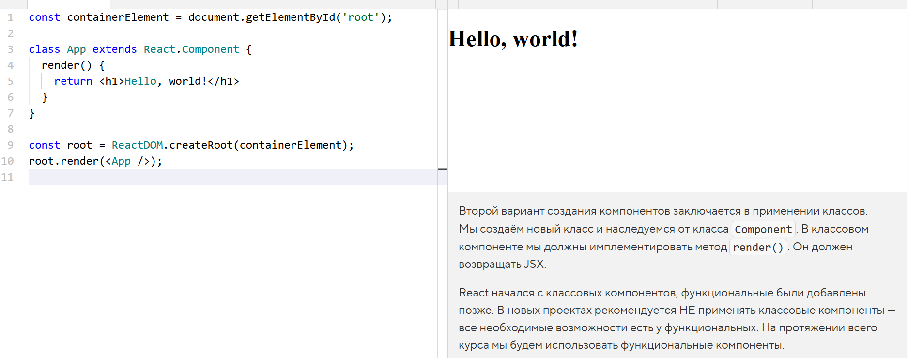

Второй вариант создания компонентов заключается в применении классов. Мы создаём новый класс и наследуемся от класса Component. В классовом компоненте мы должны имплементировать метод render(). Он должен возвращать JSX.
React начался с классовых компонентов, функциональные были добавлены позже. В новых проектах рекомендуется НЕ применять классовые компоненты — все необходимые возможности есть у функциональных. На протяжении всего курса мы будем использовать функциональные компоненты.
